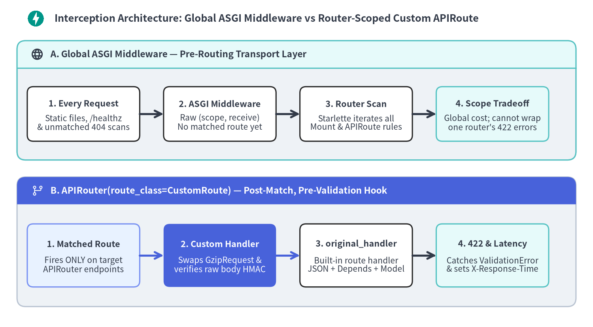
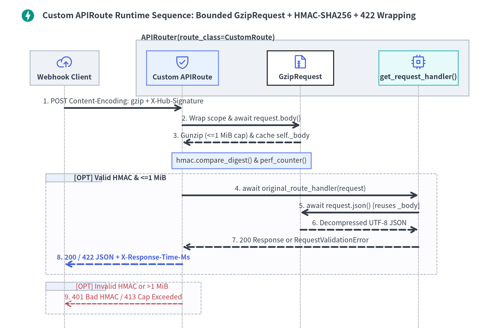

Custom Request & APIRoute Classes
Subclassing APIRoute.get_route_handler() and Starlette's Request lets you intercept requests after router matching yet before FastAPI decodes JSON or runs Pydantic validation—enabling router-scoped gzip decompression, raw-byte HMAC verification, per-operation latency headers, and structured 422 validation error wrapping.

Choosing the right extension hook in FastAPI depends on when during the ASGI lifecycle your logic must execute and how broadly it should apply across routers.
1. ASGI Middleware vs APIRoute.get_route_handler() Lifecycle
Every path operation registered on an APIRouter constructs an APIRoute instance (or the custom subclass passed to APIRouter(route_class=...)) and builds its per-request handler by calling self.get_route_handler(). When a child router is mounted via app.include_router(), FastAPI applies router prefix and dependency inheritance—invoking get_route_handler() with the merged parent prefixes, tags, dependencies, and response settings while leaving sibling routers completely untouched.
Understanding the execution order inside FastAPI's built-in route handler explains when you need a custom APIRoute instead of Depends():
- Body Read & JSON Decoding (
await request.body()/await request.json()) runs first—raisingRequestValidationError(type="json_invalid")immediately if JSON syntax is malformed. - Dependency Resolution & Parameter Validation runs second—meaning a
Depends()callable cannot decompress agzip-encoded JSON stream beforerequest.json()fails, nor canDepends()catchRequestValidationErrorraised by body or parameter validation.
| Dimension | Global Pure ASGI Middleware | APIRouter(route_class=CustomRoute) |
Depends() / Security() |
|---|---|---|---|
| Execution Timing | Before routing (runs on 404s, /static, all routers) |
After route matching, before JSON parsing & Depends() |
After FastAPI decodes the JSON or form body |
| Scope Granularity | Entire FastAPI app or mounted sub-app |
Exact APIRouter subtree (route_class=...) |
App, APIRouter, route dependencies=[...], or param |
Swap Request (body()) |
Requires manual low-level ASGI receive wrapper |
Native: instantiate CustomRequest(request.scope, request.receive) |
Too late (request.json() already ran) |
Catch RequestValidationError |
No (handled by app-wide @app.exception_handler) |
Yes: try: await original_route_handler(request) |
No (validation errors are raised before endpoint execution) |
| Route Metadata Access | scope["route"] not yet populated pre-routing |
Direct self.operation_id, self.path, self.tags, self.name |
Via request.scope["route"] only |
2. Transparent GzipRequest, Error Wrapping & Webhook HMAC Routes
Combining a custom Request subclass with a custom APIRoute unlocks clean stream transformations and cryptographic pre-validation without polluting endpoint signatures.

Bounded GzipRequest & GzipRoute Decompression
Starlette's Request.json() calls await self.body() and memoizes the resulting bytes in memory for the duration of the request. Overriding async def body(self) -> bytes on GzipRequest—and reading through gzip.GzipFile.read(MAX_DECOMPRESSED_BYTES + 1) rather than unbounded gzip.decompress()—transparently feeds decompressed UTF-8 JSON to original_route_handler while neutralizing zip-bomb denial-of-service payloads with 413 Content Too Large:
import gzip
import io
from typing import Any, Callable, Coroutine
from fastapi import APIRouter, FastAPI, HTTPException, Request, Response, status
from fastapi.routing import APIRoute
from pydantic import BaseModel
MAX_DECOMPRESSED_BYTES = 1024 * 1024 # 1 MiB decompression ceiling against zip bombs
class GzipRequest(Request):
async def body(self) -> bytes:
if not hasattr(self, "_body"):
raw_body = await super().body()
encodings = [
token.strip().lower()
for header in self.headers.getlist("Content-Encoding")
for token in header.split(",")
]
if "gzip" in encodings:
try:
with gzip.GzipFile(fileobj=io.BytesIO(raw_body)) as gz_stream:
decompressed = gz_stream.read(MAX_DECOMPRESSED_BYTES + 1)
except (OSError, EOFError) as exc:
raise HTTPException(
status_code=status.HTTP_400_BAD_REQUEST,
detail="Malformed gzip request stream",
) from exc
if len(decompressed) > MAX_DECOMPRESSED_BYTES:
raise HTTPException(
status_code=status.HTTP_413_CONTENT_TOO_LARGE,
detail="Decompressed payload exceeds 1 MiB limit",
)
raw_body = decompressed
self._body = raw_body
return self._body
class GzipRoute(APIRoute):
def get_route_handler(self) -> Callable[[Request], Coroutine[Any, Any, Response]]:
original_route_handler = super().get_route_handler()
async def custom_route_handler(request: Request) -> Response:
gzip_request = GzipRequest(request.scope, request.receive)
return await original_route_handler(gzip_request)
return custom_route_handler
app = FastAPI(title="Telemetry Ingest API", version="1.0.0")
ingest_router = APIRouter(prefix="/ingest", route_class=GzipRoute)
class MetricBatch(BaseModel):
service: str
samples: list[float]
@ingest_router.post("/metrics")
async def ingest_metrics(batch: MetricBatch) -> dict[str, Any]:
return {
"service": batch.service,
"count": len(batch.samples),
"sum": sum(batch.samples),
}
@app.get("/healthz")
async def healthz() -> dict[str, str]:
return {"status": "ok"}
app.include_router(ingest_router)
Latency Timing, Structured 422 Wrapping & HMAC-SHA256 Verification
Webhook receivers must verify X-Hub-Signature-256 against the exact raw request bytes using constant-time hmac.compare_digest() before JSON deserialization—so forged requests are rejected with 401 Unauthorized without spending CPU on schema parsing or leaking validation errors. Wrapping await original_route_handler(request) in the same APIRoute subclass also lets you attach X-Response-Time-Ms latency headers and enrich legitimate callers' 422 validation failures with self.operation_id and a bounded payload preview:
import hashlib
import hmac
import logging
import os
import secrets
import time
from typing import Any, Callable, Coroutine
from fastapi import APIRouter, FastAPI, HTTPException, Request, Response, status
from fastapi.exceptions import RequestValidationError
from fastapi.responses import JSONResponse
from fastapi.routing import APIRoute
from pydantic import BaseModel, Field
logger = logging.getLogger(__name__)
def load_webhook_secret() -> bytes:
configured = os.environ.get("WEBHOOK_HMAC_SECRET")
if configured:
return configured.encode("utf-8")
logger.warning("WEBHOOK_HMAC_SECRET unset; using ephemeral instance-isolated key")
return secrets.token_bytes(32)
WEBHOOK_SECRET: bytes = load_webhook_secret()
MAX_PREVIEW_CHARS = 256
class HmacTimedRoute(APIRoute):
def get_route_handler(self) -> Callable[[Request], Coroutine[Any, Any, Response]]:
original_route_handler = super().get_route_handler()
operation_id = self.operation_id or self.name
async def custom_route_handler(request: Request) -> Response:
started = time.perf_counter()
# 1. Verify HMAC-SHA256 over raw bytes BEFORE Pydantic parses JSON
raw_body = await request.body()
provided_sig = request.headers.get("X-Hub-Signature-256", "")
expected_sig = (
"sha256="
+ hmac.new(WEBHOOK_SECRET, raw_body, hashlib.sha256).hexdigest()
)
if not hmac.compare_digest(expected_sig, provided_sig):
raise HTTPException(
status_code=status.HTTP_401_UNAUTHORIZED,
detail="Invalid or missing X-Hub-Signature-256 header",
)
# 2. Execute inner FastAPI handler & catch RequestValidationError
try:
response = await original_route_handler(request)
except RequestValidationError as exc:
elapsed_ms = (time.perf_counter() - started) * 1000.0
preview = raw_body.decode("utf-8", errors="replace")[:MAX_PREVIEW_CHARS]
return JSONResponse(
status_code=status.HTTP_422_UNPROCESSABLE_CONTENT,
content={
"operation_id": operation_id,
"detail": exc.errors(),
"raw_body_preview": preview,
},
headers={"X-Response-Time-Ms": f"{elapsed_ms:.2f}"},
)
elapsed_ms = (time.perf_counter() - started) * 1000.0
response.headers["X-Response-Time-Ms"] = f"{elapsed_ms:.2f}"
return response
return custom_route_handler
app = FastAPI(title="Signed Webhook Receiver", version="1.0.0")
webhook_router = APIRouter(prefix="/webhooks", route_class=HmacTimedRoute)
class PaymentDeliveredEvent(BaseModel):
event_id: str
invoice_id: str
amount_cents: int = Field(gt=0)
@webhook_router.post("/payments")
async def receive_payment_webhook(
event: PaymentDeliveredEvent,
) -> dict[str, Any]:
return {"accepted": True, "event_id": event.event_id}
app.include_router(webhook_router)
[!TIP] Because
await request.body()caches the raw payload bytes in memory on theRequestinstance, callingawait request.body()insideHmacTimedRoutedoes not consume the ASGI stream away fromoriginal_route_handler(request)—FastAPI's built-in route handler reuses the cached bytes immediately. Avoid eagerrequest.body()reads only on multi-megabyte multipart file uploads whererequest.stream()should stream chunks directly toSpooledTemporaryFile.
With Chapter 3's routing and model layer complete—spanning Path, Query, Header, Cookie & Body, Response Serialization & OpenAPI 3.1, and Parameter Models, Extra Types & Examples—continue to Chapter 4's Dependency Graph, Caching & Scopes, ASGI Middleware & Threadpool for transport-level middleware, Native OpenTelemetry & Exceptions for app-wide exception handlers, and Webhooks, Callbacks, SDKs & Docs UI for documenting @app.webhooks schemas.